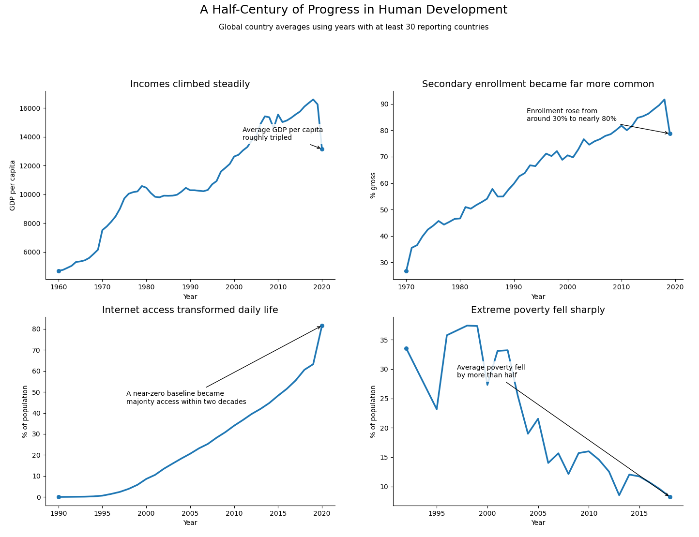
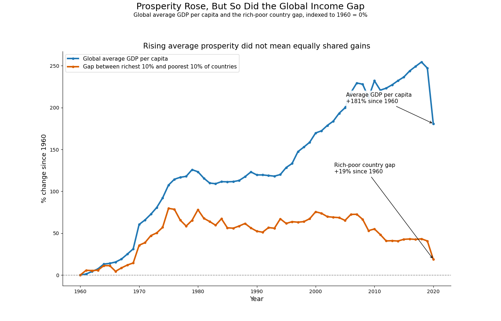

Proposition: Global human development has improved substantially over time.
FOR the Proposition

Design Decisions and Rationale:
-
I used global averages across countries instead of showing individual countries.
Score: +0.5
This was one of the most important persuasive decisions in the chart. Using country-level lines would have made the figure noisy and would have brought exceptions and unevenness to the foreground. By averaging across countries, I created smoother trend lines that are easier to interpret as broad evidence of worldwide progress. This choice worked well because it reduced clutter and supported a clear narrative, but it also hides disparities between countries. I considered showing a handful of selected countries, but I decided against that because it would have looked more selective and made the figure less effective at arguing that progress was global. -
I used a long time span rather than focusing on a recent period.
Score: +1.0
Showing multiple decades makes the story feel much larger and more historically significant. In particular, long-run trends make the rise in GDP per capita and internet access look steady and almost inevitable, while the fall in poverty looks like a major historical achievement. This helps persuade the reader that human development did not just improve slightly, but improved substantially over time. What worked well here is that long-term movement is visually dramatic. The downside is that this choice downplays short-term setbacks, reversals, and the fact that recent progress may not have been as even as the figure suggests. I considered using only post-1990 data, but that would have made the gains look smaller and weakened the overall argument. -
I combined four indicators into one multi-panel figure.
Score: +1.5
Instead of relying on a single metric, I chose four measures that together imply improvement across several dimensions of life: income, education, infrastructure, and poverty. This makes the visualization more persuasive because it suggests that the argument does not depend on one carefully chosen variable. A reader might dismiss a single chart as cherry-picking, but it is harder to dismiss four panels all pointing in the same direction. This design worked well because it made the figure feel broad and comprehensive. I considered using only GDP and poverty, but adding school enrollment and internet access made the progress narrative feel more socially grounded and less purely economic. -
I used a claim-style title and annotations rather than a neutral label.
Score: -0.5
The title, “A Half-Century of Progress in Human Development,” already tells the reader how to interpret the chart before they look closely at the lines. The annotations reinforce that reading by explicitly pointing to major gains, such as poverty falling by more than half or internet access expanding from almost nothing to majority usage. This was very effective for persuasion because it reduces the work the reader must do to find the intended takeaway. At the same time, it is less neutral than simply naming variables. I considered a more descriptive title like “Global Trends in Human Development Indicators,” but that felt too passive and much less persuasive. -
I filtered to years with enough reporting countries.
Score: +1.0
This was a less visible design choice, but it mattered for credibility and readability. Some indicators had sparse coverage in certain years, and including those years created unstable spikes or dips that distracted from the main story. Restricting the figure to years with enough reporting countries produced cleaner trends that were easier to interpret. This made the figure more effective because the lines look smoother and more reliable. The tradeoff is that the transformation is selective and could be seen as favoring interpretability over completeness. I chose this over plotting every available year because the noisier version weakened the persuasive impact and looked less polished.
AGAINST the Proposition

Design Decisions and Rationale:
-
I changed the opposing visualization from a single-year snapshot to a two-panel inequality-over-time visualization.
Score: +1.0
This was a direct response to checkpoint feedback that my earlier “against” side relied too heavily on extremes and a single year. By showing long-run trends and distributional context, this version gives the counterargument more balance and makes it feel less like a one-time exception. -
I paired average GDP growth with the 90th/10th percentile gap.
Score: +0.5
The left panel compares broad economic growth with a measure of cross-country inequality, which helps argue that average progress did not necessarily mean equally shared gains. This was persuasive because it lets the reader see growth and inequality at the same time, rather than treating them as separate stories. -
I added the median country and percentile bands to show more middle ground.
Score: +1.5
Instead of focusing only on extremes, I included the median country and the 25th–75th and 10th–90th percentile ranges. This makes the figure more balanced and more faithful to the checkpoint feedback, because it shows that many countries did get richer while the overall spread between countries remained wide. -
I differentiated the lines by both color and style, and labeled them directly on the chart.
Score: +1.5
The blue average line is solid, the green median line is dashed, and the orange inequality line remains visually distinct. I also labeled the lines directly at the right edge instead of relying only on a legend, which makes the figure easier to follow when the blue and green lines come close together. -
I used a skeptical title and concise annotations to frame the figure as a critique of average progress.
Score: -0.5
The title and subtitle encourage the reader to question whether rising income alone is enough evidence of successful human development. The shorter annotation text keeps the chart readable while still emphasizing the main persuasive point: many countries improved, but cross-country gaps remained substantial.
Final Reflection
This project made me realize that persuasive visualization often depends less on changing the data and more on changing the framing. For the “for” side, it was relatively straightforward to build a compelling progress narrative by using global averages, a long time span, and several indicators that all moved in a positive direction. For the “against” side, it was harder to create a visualization that felt equally persuasive without looking obviously cherry-picked. My original checkpoint approach relied more on extreme countries and one-year snapshots, which created contrast but did not provide enough context. After receiving feedback, I revised the opposing side to include a longer-term inequality visualization with percentile bands and a median line, which made the counterargument feel more balanced and more defensible.
What surprised me most was how subtle design choices could completely change the meaning of the same dataset. In the first visualization, averaging across countries makes development look broad, stable, and clearly successful. In the second visualization, comparing average growth to inequality and showing the spread of the distribution makes that same dataset feel much less comforting. One challenge was that the revised anti-visualization did not support an extreme claim that “only rich countries benefited,” because the median country also improved substantially. Instead, I had to make a more nuanced argument: growth was real and broad, but it was not equally shared, and large cross-country gaps persisted. That ended up being a stronger and more honest position.
I now think ethical analysis and visualization is less about whether a chart is completely neutral and more about whether the framing is fair to the complexity of the data. I do not think there is a perfectly clean boundary between acceptable persuasion and misleading framing. A choice like averaging across countries, focusing on decile gaps, or selecting a baseline year can be both technically valid and rhetorically slanted at the same time. For me, the most useful boundary is whether a design choice highlights a real pattern without hiding so much context that the reader would likely reach a very different conclusion if they saw the fuller picture. This project made me much more aware that ethical visualization involves not only avoiding false claims, but also thinking carefully about what kinds of truths a chart emphasizes and what kinds it leaves in the background.